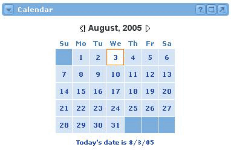
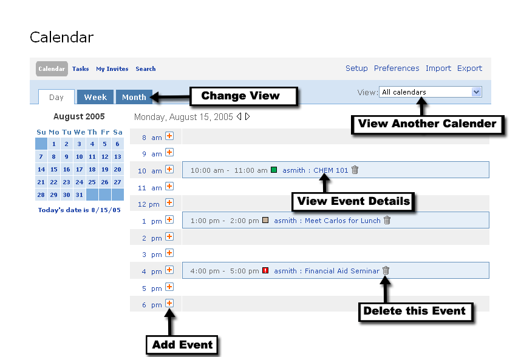
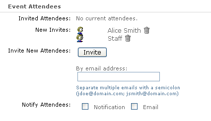
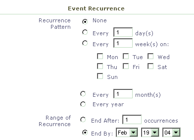
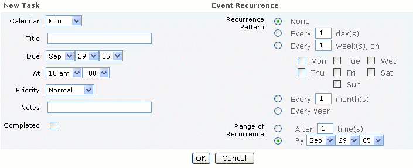
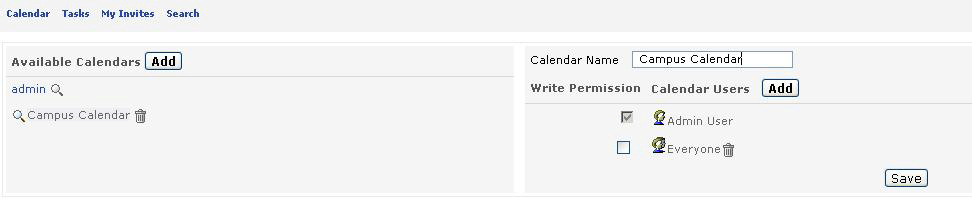
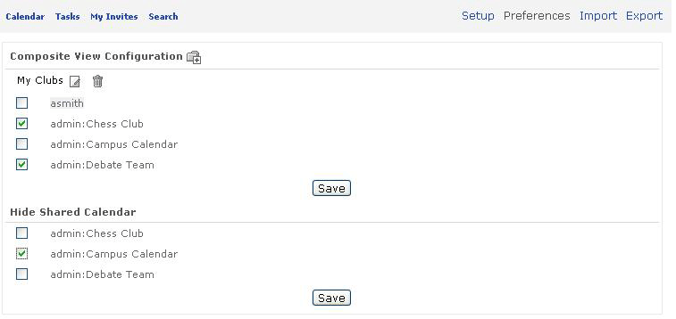

Calendar Channel
Looking for more help options? Click Here
The Calendar functionality presented within this channel is similar to the functionality of most calendar applications (adding/deleting events, setting up recurring events, inviting attendees, etc.).
Task View
Adding New Events
Event Attendees
When selecting users and groups for a calendar event you have three options:
Adding New Tasks
The main view of the Calendar is a launching pad into more detailed views of your calendar. At the bottom of the Calendar, today's date is displayed. Clicking this link will take you into today's detailed "daily" view of the Calendar. Clicking on any other date displayed in the calendar will open the "daily" view for that date. From the daily view, you will have access to all calendar functions.
To navigate dates in a future or previous month, use the arrow icons next to the current month and year.

Calendar Views
Detailed Daily Event View
The detailed daily view in the Calendar allows the user to see all events for a particular day, as well as add additional items.
At the top of the channel, there are several variables that can be modified:
1. Overall Display
- Calendar - Displays Calendar Events for the selected date or date range.
- Tasks - Displays Tasks for the select date or date range.
- My Invites - Displays invitations for calendar events to which you've been invited
- Search - Allows you to search calendar events.
2. Date Range
- Daily
- Weekly
- Monthly
3. View
- List of available calendars. Filters the events or tasks displayed.

Calendar
The main section within this view displays a range of times, as well as any currently scheduled events. You can edit/delete an event directly from this view.
To edit an event or view event details, click the event title.
To delete an event, click the Delete icon next to the event title.
To add an event, simply click the Add icon next to the associated time frame for your event. Clicking this icon will bring you into the New Event view.
|
|
If you do not "own" an event or have "write" permissions, you will not be given access to delete an event. In this scenario, clicking the event title will only display event information, edit capabilities will not be enabled. |
The same views described for events are also available for tasks. Clicking the Task link at the top of any of the views will bring you to a task focused view. From within these views, you can edit/delete tasks, add new tasks, or mark completions.
To edit a task or view task details, click the task title.
To delete a task, click the Delete icon next to the task title.
To mark a task complete, click the checkbox next to the task title.
To add a task, simply click the Add icon next to the associated time frame for your task. Clicking this icon will bring you into the New Tasks view.
| My Invites Displays a list of calendar events to which you have been invited and have not yet responded. Click Accept to accept an invitation and add it to your personal calendar. Click Decline to decline an invitation and remove it from your invitation list. |
Search The search option allows you to search using the following criteria.
The resulting search will return a list of Calendar Events matching your search criteria. From the list, you can choose to view, edit or delete items. |
Detailed Weekly and Monthly Event Views The detailed weekly and monthly event views contain functionality similar to that of the Daily View. The top of the channel displays the same options as listed previously. The main view, conversely, shows either a weekly or monthly glance of the events or tasks. You have the ability to edit/delete events or tasks from these views, add new items, or focus in on specific days. |
Adding new events to a calendar requires several pieces of information:
- Calendar
- Title
- Date
- Time
- Length
- Place
- Category
- Priority
- Notes
Of these fields, only the Calendar, Title, Date, Time, and Length fields are required. Also note that the Event Attendees and Event Recurrence sections of the form are also optional.
|
|
In some cases, you may have several personal calendars or shared calendars with write access. You need to select the specific calendar for this event within the "Calendar" information drop-down menu. |
When adding/editing new events, you have the ability to invite other individuals. These individuals can come from the portal's list of individuals or simply be added via an e-mail address.
By clicking the Invite button, you will be taken to a view to select users and groups who will receive invitations to the calendar event.

|
|
If you would like for invitations to show up for other invited individuals within their Academus calendars, you will need to select them from the portal list. |
- Browse - Allows you to browse the portal groups hierarchy and invite groups of individuals. Clicking the + icon next to a group will expand the group hierarchy.
- Search - Allows you to search for and select a specific portal user.
- Personal Contacts - Allows you to select an individual from your personal address book.
|
|
When browsing the group hierarchy, you may notice that some groups do not have a checkbox enabling them for selection. Access to groups is controlled by permissions, if no checkbox is present you do not have permission to send calendar events to this group. |
|
After adding users/groups through the browse or search option, click Submit Selections. To invite those attendees that do not exist within the portal or personal address book, you can specify a specific list of e-mail addresses. Finally, you can choose to send attendees an e-mail confirmation of the meeting as well as a notification within the portal. |
Event Recurrence Event recurrence allows you to plan for an event to occur repeatedly over time. The default within this section is that there will be no recurrence pattern. If, however, you would like an event to repeat, you have several options:
Then select a range of recurrence
If no range of recurrence is selected, then the event will appear only for the initial meeting date.
|

|
|
You must click the radio button next to the recurrence choice. It does not "auto-select" when you type an X value in the field. |
Adding new tasks to the calendar requires several pieces of information:
- Calendar
- Title
- Due Date
- At (a specific time for the task)
- Priority
- Notes
- Completion Check-box
|
|
In some cases, you may have several personal calendars or shared calendars with write access. You need to select the specific calendar for this task within the "Calendar" information drop-down menu. |
|
You also have the ability to setup a recurrence pattern for Tasks. You can choose from the following:
Then select a range of recurrence
|

Other Calendar Options
The setup link allows you to add or modify calendars. You can also allow other users to share your calendar(s).
Click the Add button, next to Available Calendars, to create a new calendar. Enter a unique name for the new calendar in the Calendar Name field. If you would like to grant other portal users the ability to view the calendar click the Add button, next to Calendar Users. You will be prompted to select those users to whom access to the calendar should be granted.
Click Save to add the new calendar to your personal list of calendars. You may now begin adding events to your new calendar.

Preferences
Preferences enable you to create or modify your Personal Composite View(s). The Personalized Composite View is a user-defined list of personal and shared calendars. By choosing a variety of calendars to show within this view, the user can control the events that "roll-up" and are viewed.
Click the Add Composite View Configuration icon to create a new composite calendar. Enter the name for the new composite view (e.g. My Clubs, Classes). Check the boxes corresponding to those calendars from which events should be displayed in your composite view. Click the Save button to save your latest selections.
Users can also choose to hide any shared calendars by checking the corresponding box next to the calendar they wish to hide, then clicking the Save button. Hiding a shared calendar means that that calendar will no longer appear in any drop-down lists within the calendar channels.

Import / Export
The Calendar channel supports the import and export of calendar events and tasks. Calendar events and tasks can be imported or exported in a tab delimited format or VCalendar (iCal) format for Palm. VCalendar(iCal) format exports are limited to a single calendar only.